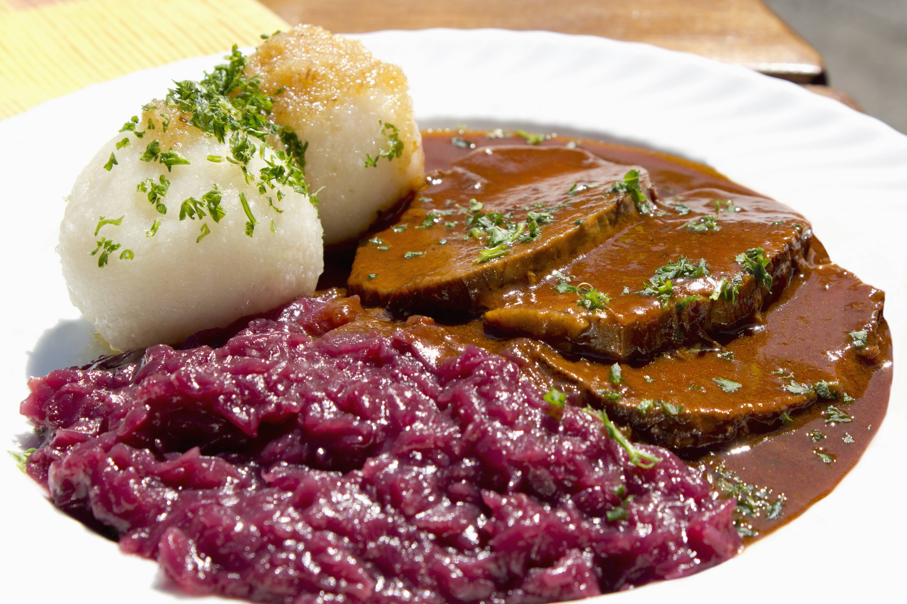

Sauerbraten

Description
Sauerbraten is a traditional German roast of heavily marinated meat.
It is regarded as a national dish of Germany, and is frequently served
in German-style restaurants internationally. It can be prepared from a
variety of meats, most often from beef, but also from venison, lamb and
mutton, pork and horse. Before cooking, the raw meat is marinated for
three to ten days in a mixture of vinegar or wine, water, herbs, spices,
and seasonings. Usually, tougher cuts of meat, such as rump roast or
bottom round of beef, are used, and the long marinating tenderizes the
meat. A Sauerbraten dinner is almost always accompanied by a hearty
gravy resulting from its roasting and is most often served with potato
pancakes (Kartoffelpuffer), potato dumplings (Kartoffelklöße), or
Spätzle.
Ingredients used in the marinade, and accompaniments served with
sauerbraten, vary across regions. Regional variants of the dish include
those from Baden, Franconia, Thuringia, Rhineland, Saarland, Silesia,
and Swabia.
- 3 pounds beef rump roast
- 2 large onions, chopped
- 1 cup red wine vinegar, or to taste
- 1 cup water
- 1 tablespoon salt
- 1 tablespoon ground black pepper
- 1 tablespoon white sugar
- 10 whole cloves, or more to taste
- 2 bay leaves, or more to taste
- 2 tablespoons all-purpose flour
- salt and ground black pepper to taste
- 2 tablespoons vegetable oil
- 10 gingersnap cookies, crumbled
- Place beef rump roast, onions, vinegar, water, 1 tablespoon salt,
1 tablespoon black pepper, sugar, cloves, and bay leaves in a large
pot. Cover and refrigerate for 2 to 3 days, turning meat daily.
Remove meat from marinade and pat dry with paper towels, reserving
marinade.
- Season flour to taste with salt and black pepper in a large bowl.
Sprinkle flour mixture over beef.
- Heat vegetable oil in a large Dutch oven or pot over medium heat;
cook beef until brown on all sides, about 10 minutes. Pour reserved
marinade over beef, cover, and reduce heat to medium-low. Simmer
until beef is tender, 3 1/2 to 4 hours. Remove beef to a platter
and slice.
- Strain solids from remaining liquid and continue cooking over
medium heat. Add gingersnap cookies and simmer until gravy is
thickened, about 10 minutes. Serve gravy over sliced beef.